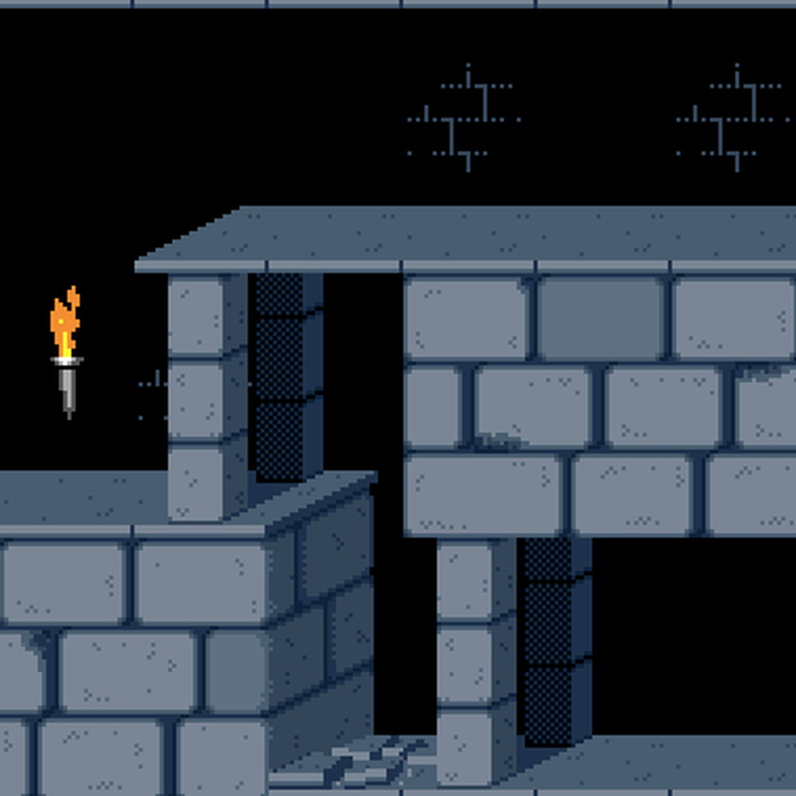

Los que nacimos a mediados o finales de los setenta tuvimos la suerte de poder disfrutar de los primeros ordenadores de 8 bits con la mirada del niño que se flipa con cualquier cosa, del chaval que con nueve o diez años tiene acceso a unas máquinas que no acaba de entender pero que le abren las puertas a un nuevo universo capaz de ofrecerle horas y horas de diversión. A mí me cayó un MSX. Un Hit-Bit de Sony, para ser más exactos. Recuerdo el momento en que mis padres me lo regalaron. Sé que aluciné al ver la caja y que la abrí emocionado, aunque soy incapaz de distinguir con claridad todos los detalles. Quién me hubiera dicho por aquel entonces que, muchos años después, acabaría ganándome la vida escribiendo sobre videojuegos.
Del arcade al ordenador , estos juegos retro han sido rediseñados para PC de tal forma que puedas jugar en la comodidad de tu casa u oficina. Algunos funcionan en línea mediante acceso al navegador, mientras que otros funcionan en emuladores online. Otras formas de jugar son con la instalación de aplicaciones aptas para funcionar como emuladores de PC. Y si tu tarjeta gráfica lo permite, puedes descargarlos en tu ordenador para acceder a ellos sin conexión a internet.